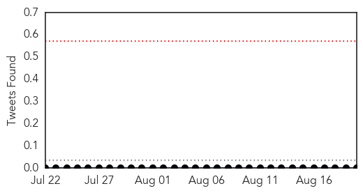
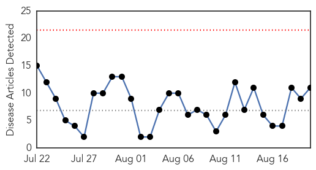
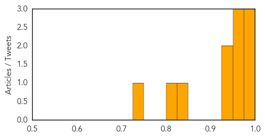

Chikungunya
30-Day Web Trend
1 alerts, 0 warnings

30-Day Twitter Trend
0 alerts, 0 warnings

Article Locations

Article Confidences

Top Articles:
-
No articles found for Aug 20, 2015
Top Tweets:
-
No tweets found for Aug 20, 2015
West Nile Virus
30-Day Web Trend
0 alerts, 0 warnings

30-Day Twitter Trend
0 alerts, 0 warnings

Article Locations
Article Confidences
Top Articles:
- 0.992
- First human case of West Nile in Illinois - Story
- 0.985
- First Pima County Case Of West Nile Virus Confirmed, Suspected In Death
- 0.981
- Village: Confirmed human West Nile case in Skokie
- 0.973
- West Nile virus kills Williams Co. man
- 0.973
- First Human Case Of West Nile Virus Confirmed In Tulsa County
- 0.960
- West Nile virus situation in Serbia "under control"
- 0.948
- Carter County resident dies from West Nile, marking first death of year
- 0.933
- Four New Batches of Mosquitoes Test Positive for West Nile...
- 0.828
- Mosquitoes near Martinez waterfront test positive for West Nile Virus
- 0.804
- 20 West Nile virus infections diagnosed so far this year
- 0.749
- Health agency reports Ohioan dies from West Nile virus
Top Tweets:
-
No tweets found for Aug 20, 2015